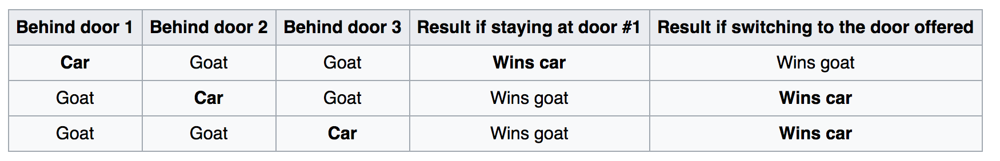
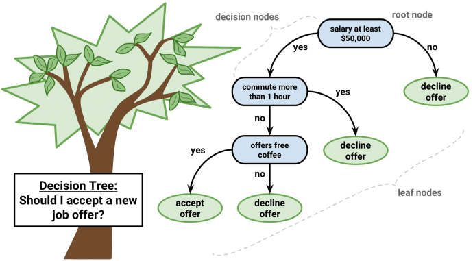
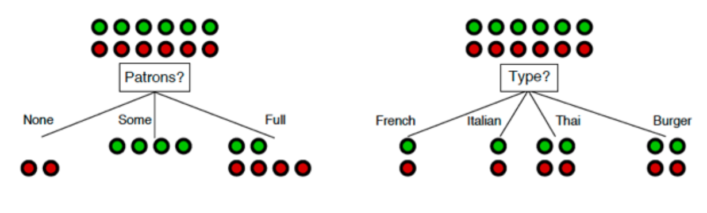

Monty Hall Problem

Monty Hall Problem
1/3 chance of getting the car if you stick with original choice
2/3 chance of getting the car if you switch!
Decision Making
Model this in Python?
If salary > 50k:
Decline offer
Else if salary > 50k and commute > 1 hr
Decline offer
Decision Tree
Really, it's an upside tree (leaves on bottom)
Leaf: Terminal node (no child)
Internal Node: Splits the predictor space
Choosing a Restaurant

Which attribute to split?
Patrons is a better choice because it gives more information about the classification
Goal: Minimize Entropy
$H[X] = -\sum_{k=1}^K P(X = a_{k})*log(P(X = a_{k}))$

Depth
- Depth: Longest path from root to a leaf node
- If too deep, can overfit
- If too shallow, underfits

Create trees
Grow tree until stopping criteria reached (max depth, minimum information gain, etc.)
Greedy, recursive partitioning

Comparison
Pros
- Interpretable
- Simple
- Flexible (different data types)
Cons
- Poor accuracy
- High variance (if change training data a little, tree structure changes drastically)
Bias vs Variance

Bias-Variance Tradeoff
$Error = Variance + Bias^2 + noise$

Bias-Variance Trade-off
$Error = Variance + Bias^2 + noise$
- Reduce bias: Build more complex models
- Reduce variance: Use a lot of data or simple model
- How to reduce the error caused by noise?
Bagging

Averaging a set of observations reduces variance
But we only have one training set... or do we?
Bootstrap
Simulate new datasets:
- Take samples (with replacement) from original training set
- Repeat n times

Bagging
- Train a tree on each bootstrap sample, and average their predictions (Bootstrap Aggregating)
- Now, don't need to prune a tree to reduce variance! Can grow deep trees
Random Forests
- Like bagging, but removes correlation among trees
- At each split, considers only a subset of predictors
Random Forests

Let's build a classifier


What did the computer learn?

A grass classifier!
Sexiest job of the 21st century?
I keep saying the sexy job in the next ten years will be statisticians. People think I’m joking, but who would’ve guessed that computer engineers would’ve been the sexy job of the 1990s?
-Google’s Chief Economist Hal Varian
The difference between a data scientist and statistician?
A data scientist is a statistician that lives in San Francisco
Data science is statistics on a Mac
A data scientist is someone who is better at statistics than any software engineer and better at software engineering than any statistician
Plus, they are paid more. Mean salary: 120,000 and Median salary: 126,000
Right or left skewed?
Plans after graduation?
Grad school? Departmental Scholars
Industry? Check out data science bootcamps!